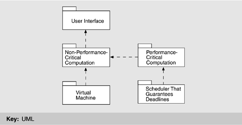
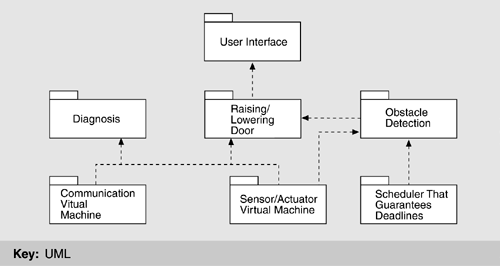

| [ Team LiB ] |
|
7.2 Designing the ArchitectureIn this section we describe a method for designing an architecture to satisfy both quality requirements and functional requirements. We call this method Attribute-Driven Design (ADD). ADD takes as input a set of quality attribute scenarios and employs knowledge about the relation between quality attribute achievement and architecture in order to design the architecture. The ADD method can be viewed as an extension to most other development methods, such as the Rational Unified Process. The Rational Unified Process has several steps that result in the high-level design of an architecture but then proceeds to detailed design and implementation. Incorporating ADD into it involves modifying the steps dealing with the high-level design of the architecture and then following the process as described by Rational. ATTRIBUTE-DRIVEN DESIGNADD is an approach to defining a software architecture that bases the decomposition process on the quality attributes the software has to fulfill. It is a recursive decomposition process where, at each stage, tactics and architectural patterns are chosen to satisfy a set of quality scenarios and then functionality is allocated to instantiate the module types provided by the pattern. ADD is positioned in the life cycle after requirements analysis and, as we have said, can begin when the architectural drivers are known with some confidence. The output of ADD is the first several levels of a module decomposition view of an architecture and other views as appropriate. Not all details of the views result from an application of ADD; the system is described as a set of containers for functionality and the interactions among them. This is the first articulation of architecture during the design process and is therefore necessarily coarse grained. Nevertheless, it is critical for achieving the desired qualities, and it provides a framework for achieving the functionality. The difference between an architecture resulting from ADD and one ready for implementation rests in the more detailed design decisions that need to be made. These could be, for example, the decision to use specific object-oriented design patterns or a specific piece of middleware that brings with it many architectural constraints. The architecture designed by ADD may have intentionally deferred this decision to be more flexible. There are a number of different design processes that could be created using the general scenarios of Chapter 4 and the tactics and patterns of Chapter 5. Each process assumes different things about how to "chunk" the design work and about the essence of the design process. We discuss ADD in some detail to illustrate how we are applying the general scenarios and tactics, and hence how we are "chunking" the work, and what we believe is the essence of the design process. We demonstrate the ADD method by using it to design a product line architecture for a garage door opener within a home information system. The opener is responsible for raising and lowering the door via a switch, remote control, or the home information system. It is also possible to diagnose problems with the opener from within the home information system. Sample InputThe input to ADD is a set of requirements. ADD assumes functional requirements (typically expressed as use cases) and constraints as input, as do other design methods. However, in ADD, we differ from those methods in our treatment of quality requirements. ADD mandates that quality requirements be expressed as a set of system-specific quality scenarios. The general scenarios discussed in Chapter 4 act as input to the requirements process and provide a checklist to be used in developing the system-specific scenarios. System-specific scenarios should be defined to the detail necessary for the application. In our examples, we omit several portions of a fully fleshed scenario since these portions do not contribute to the design process. For our garage door example, the quality scenarios include the following:
Beginning ADDWe have already introduced architectural drivers. ADD depends on the identification of the drivers and can start as soon as all of them are known. Of course, during the design the determination of which architectural drivers are key may change either as a result of better understanding of the requirements or as a result of changing requirements. Still, the process can begin when the driver requirements are known with some assurance. In the following section we discuss ADD itself. ADD StepsWe begin by briefly presenting the steps performed when designing an architecture using the ADD method. We will then discuss the steps in more detail.
1 Choose the Module to DecomposeThe following are all modules: system, subsystem, and submodule. The decomposition typically starts with the system, which is then decomposed into subsystems, which are further decomposed into submodules. In our example, the garage door opener is the system. One constraint at this level is that the opener must interoperate with the home information system. 2.a Choose the Architectural DriversAs we said, architectural drivers are the combination of functional and quality requirements that "shape" the architecture or the particular module under consideration. The drivers will be found among the top-priority requirements for the module. In our example, the four scenarios we have shown are architectural drivers. In the systems on which this example is based, there were dozens of quality scenarios. In examining them, we see a requirement for real-time performance,[1] and modifiability to support product lines. We also see a requirement that online diagnosis be supported. All of these requirements must be addressed in the initial decomposition of the system.
The determination of architectural drivers is not always a top-down process. Sometimes detailed investigation is required to understand the ramifications of particular requirements. For example, to determine if performance is an issue for a particular system configuration, a prototypical implementation of a piece of the system may be required. In our example, determining that the performance requirement is an architectural driver requires examining the mechanics of a garage door and the speed of the potential processors. We will base our decomposition of a module on the architectural drivers. Other requirements apply to that module, but, by choosing the drivers, we are reducing the problem to satisfying the most important ones. We do not treat all of the requirements as equal; the less important requirements are satisfied within the constraints of the most important. This is a significant difference between ADD and other architecture design methods. 2.b Choose an Architectural PatternAs discussed in Chapter 5, for each quality there are identifiable tactics (and patterns that implement these tactics) that can be used in an architecture design to achieve a specific quality. Each tactic is designed to realize one or more quality attributes, but the patterns in which they are embedded have an impact on other quality attributes. In an architecture design, a composition of many such tactics is used to achieve a balance between the required multiple qualities. Achievement of the quality and functional requirements is analyzed during the refinement step. The goal of step 2b is to establish an overall architectural pattern consisting of module types. The pattern satisfies the architectural drivers and is constructed by composing selected tactics. Two main factors guide tactic selection. The first is the drivers themselves. The second is the side effects that a pattern implementing a tactic has on other qualities. For example, a classic tactic to achieve modifiability is the use of an interpreter. Adding an interpreted specification language to a system simplifies the creation of new functions or the modification of existing ones. Macro recording and execution is an example of an interpreter. HTML is an interpreted language that specifies the look-and-feel of Web pages. An interpreter is an excellent technique for achieving modifiability at runtime, but it has a strong negative influence on performance. The decision to use one depends on the relative importance of modifiability versus performance. A decision may be made to use an interpreter for a portion of the overall pattern and to use other tactics for other portions. If we examine the available tactics from Chapter 5 in light of our architectural drivers, we see performance and modifiability as the critical quality attributes. The modifiability tactics are "localize changes," "prevent the ripple effect," and "defer binding time." Moreover, since our modifiability scenarios are concerned primarily with changes that will occur during system design, the primary tactic is "localize changes." We choose semantic coherence and information hiding as our tactics and combine them to define virtual machines for the affected areas. The performance tactics are "resource demand" and "resource arbitration." We choose one example of each: "increase computational efficiency" and "choose scheduling policy." This yields the following tactics:
Figure 7.2 shows an architectural pattern derived from the combination of these tactics. This is not the only pattern that can be derived, but it is a plausible one. Figure 7.2. Architectural pattern that utilizes tactics to achieve garage door drivers 2.c Instantiate Modules and Allocate Functionality Using Multiple ViewsIn the preceding section, we discussed how the quality architectural drivers determine the decomposition structure of a module via the use of tactics. As a matter of fact, in that step we defined the module types of the decomposition step. We now show how those module types will be instantiated. Instantiate modulesIn Figure 7.2, we identified a non-performance-critical computation running on top of a virtual machine that manages communication and sensor interactions. The software running on top of the virtual machine is typically an application. In a concrete system we will normally have more than one module. There will be one for each "group" of functionality; these will be instances of the types shown in the pattern. Our criterion for allocating functionality is similar to that used in functionality-based design methods, such as most object-oriented design methods. For our example, we allocate the responsibility for managing obstacle detection and halting the garage door to the performance-critical section since this functionality has a deadline. The management of the normal raising and lowering of the door has no timing deadline, and so we treat it as non-performance-critical section. The diagnosis capabilities are also non-performance critical. Thus, the non-performance-critical module of Figure 7.2 becomes instantiated as diagnosis and raising/lowering door modules in Figure 7.3. We also identify several responsibilities of the virtual machine: communication and sensor reading and actuator control. This yields two instances of the virtual machine that are also shown in Figure 7.3. Figure 7.3. First-level decomposition of garage door opener The result of this step is a plausible decomposition of a module. The next steps verify how well the decomposition achieves the required functionality. Allocate functionalityApplying use cases that pertain to the parent module helps the architect gain a more detailed understanding of the distribution of functionality. This also may lead to adding or removing child modules to fulfill all the functionality required. At the end, every use case of the parent module must be representable by a sequence of responsibilities within the child modules. Assigning responsibilities to the children in a decomposition also leads to the discovery of necessary information exchange. This creates a producer/consumer relationship between those modules, which needs to be recorded. At this point in the design, it is not important to define how the information is exchanged. Is the information pushed or pulled? Is it passed as a message or a call parameter? These are all questions that need to be answered later in the design process. At this point only the information itself and the producer and consumer roles are of interest. This is an example of the type of information left unresolved by ADD and resolved during detailed design. Some tactics introduce specific patterns of interaction between module types. A tactic using an intermediary of type publish-subscribe, for example, will introduce a pattern, "Publish" for one of the modules and a pattern "Subscribe" for the other. These patterns of interaction should be recorded since they translate into responsibilities for the affected modules. These steps should be sufficient to gain confidence that the system can deliver the desired functionality. To check if the required qualities can be met, we need more than just the responsibilities so far allocated. Dynamic and runtime deployment information is also required to analyze the achievement of qualities such as performance, security, and reliability. Therefore, we examine additional views along with the module decomposition view. Represent the architecture with viewsIn Chapter 2, we introduced a number of distinct architectural views. In our experience with ADD, one view from each of the three major groups of views (module decomposition, concurrency, and deployment) have been sufficient to begin with. The method itself does not depend on the particular views chosen, and if there is a need to show other aspects, such as runtime objects, additional views can be introduced. We now briefly discuss how ADD uses these three common views.
The crossing of a virtual thread from one processor to another generates responsibilities for different modules. It indicates a communication requirement between the processors. Some module must be responsible for managing the communication; this responsibility must be recorded in the module decomposition view. In our example, deployment issues are found in the division of responsibilities between the door opener system and the home information system. Which is responsible for authenticating a remote request, and what is the communication protocol between the two? 2.d Define Interfaces of the Child ModulesFor purposes of ADD, an interface of a module shows the services and properties provided and required. This is different from a signature. It documents what others can use and on what they can depend. Analyzing and documenting the decomposition in terms of structure (module decomposition view), dynamism (concurrency view), and runtime (deployment view) uncovers the interaction assumptions for the child modules, which should be documented in their interfaces. The module view documents
The concurrency view documents
The deployment view documents
All this information should be available in the modules' interface documentation. 2.e Verify and Refine Use Cases and Quality Scenarios as Constraints for the Child ModulesThe steps enumerated thus far amount to a proposal for a module decomposition. This decomposition must be verified and the child modules must be prepared for their own decomposition. Functional requirementsEach child module has responsibilities that derive partially from considering decomposition of the functional requirements. Those responsibilities can be translated into use cases for the module. Another way of defining use cases is to split and refine the parent use cases. For example, a use case that initializes the whole system is broken into the initializations of subsystems. This approach has traceability because an analyst can follow the refinement. In our example, the initial responsibilities for the garage door opener were to open and close the door on request, either locally or remotely; to stop the door within 0.1 second when an obstacle is detected; and to interact with the home information system and support remote diagnostics. The responsibilities are decomposed into the following functional groups corresponding to the modules:
ConstraintsConstraints of the parent module can be satisfied in one of the following ways:
In our example, one constraint is that the communication with the home information system is maintained. The communication virtual machine will recognize if this communication is unavailable, so the constraint is satisfied by a single child. Quality scenariosQuality scenarios also have to be refined and assigned to the child modules.
In our example, the quality scenarios we identified as architectural drivers are met or refined in the following fashion:
At the end of this step we have a decomposition of a module into its children, where each child module has a collection of responsibilities; a set of use cases, an interface, quality scenarios, and a collection of constraints. This is sufficient to start the next iteration of decomposition. Notice from the example how much (or little) progress is made in a single iteration: We have a vocabulary of modules and their responsibilities; we have considered a variety of use cases and quality scenarios and understand some of their ramifications. We have decided the information needs of the modules and their interactions. This information should be captured in the design rationale, as we discuss in Chapter 9, Documenting Software Architectures. We have not decided on most of the details yet. We do not know the language for communication between the user interface module and the raising/lowering modules. We do not know the algorithm for performing obstacle detection. We do not know, in any detail, how the performance-critical section communicates with the non-performance-critical section. What we have done is defined enough so that if we are designing a large system, we can allocate work teams and give them their charges. If we are designing a small system (such as the garage door opener), we can directly proceed to the next iteration and decide on answers for these questions. |
| [ Team LiB ] |
|